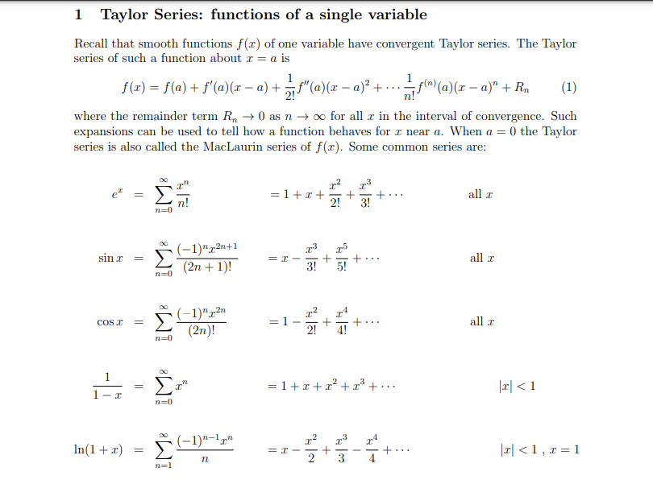
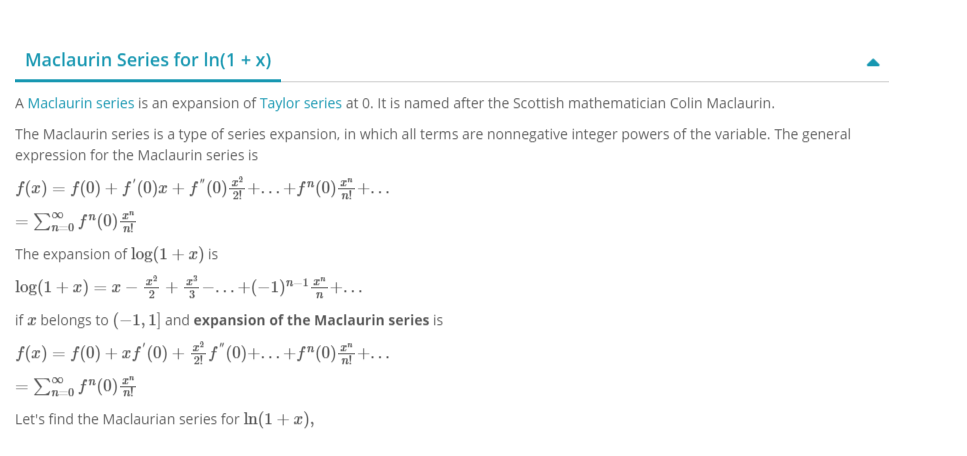

Unit 1 : Differential calculus.
=> Successive Differention
Introduction
Successive Differentiation is the process of differentiating a given function successively
times and the results of such differentiation are called successive derivatives. The higher order differential coefficients are of atmost importance in scientific and engineering applications.
Let f(x) be a differentiable function and let its successive derivatives be denoted by f'(x)
,f''(x),f'''(x) ....f n(x)
Common notations of higher order Derivatives of y=f(x)
1st Derivative: f'(x) or y' or y1 or Dy or dy/dx
2nd Derivative: f''(x) or y'' or y2 or D2y or
d2y/dx2
..................................................
nnd Derivative: f n(x) or y n or y n or Dny
or dny/dxn
Example : find the n th derivative of eax
Solution :
let y=eax
y1=aeax
y2=a2eax
...........
yn=aneax
y1=aeax
y2=a2eax
...........
yn=aneax
QUESTION FOR PRACTICE
Find the n th derivative of following.
1. y=sin6x cos4x
2. y=sinax+cosax
3. y=(sinx) 4
4. y=tan-1x/a
5. y=1/(1-5x+6x2 )
=> Leibnitz Theorem

QUESTION FOR PRACTICE.
1. if y=log(x+√1+x 2 )
prove that (1+x2)yn+2+(2n+1)xyn+1+n2yn=0
2.if y=sin(m sin -1x )
prove that (1-x2)yn+2=(2n+1)xyn+1+(n2-m 2)yn
=> EXPANSION OF FUNCTION OF ONE VARIABLE IN TAYLOR'S AND MECLAURIN'S INFINITE SERIES


=> MAXIMA AND MINIMA OF FUNCTIONS OF ONE VARIABLE
Let c be a point in a domain D of a function f. Then f(c) is the
⇒ absolute maximum value of f on D if 𝑓(𝑐) ≥ 𝑓(𝑥) for all x in D.
⇒ absolute minimum value of f on D if 𝑓(𝑐) ≤ 𝑓(𝑥) for all x in D.
Definition :
Let c be a point in a domain D of a function f. Then f(c) is the
⇒ local maximum value of f if𝑓(𝑐) ≥ 𝑓(𝑥) when x is near c.
⇒ local minimum value of f if𝑓(𝑐) ≤ 𝑓(𝑥)when x is near c.
Critical point :
A critical point of a function f is a point c in the domain of f such that either f ‘(c) = 0 or f ‘(c) does not exists. If f has local maximum value or minimum value at c, then c is a critical point of f.
Example :
Q). Find the absolute maximum and absolute minimum of
1.f(𝑥) = 𝑥 − 𝑙𝑜𝑔𝑥 on [ 1/2, 2]
Solution :
𝑓(𝑥) = 𝑥 − 𝑙𝑜𝑔𝑥 is continuous on [ 1/2, 2]
𝑓′(𝑥) = 1 −1/𝑥
𝑓′(𝑥) = 0 ⇒ 1 −1/𝑥= 0
⇒(𝑥−1)/𝑥= 0
⇒ 𝑥 = 1 is the critical point.
The value of f(x) at critical point is
𝑓(1) = 1 − 𝑙𝑜𝑔1 = 1 − 0 = 1
The values of f(x) at the end points of the intervals are
𝑓 (1/2) =1/2− 𝑙𝑜𝑔 1/2 =1/2−(−0.6931)
= 1.1931
𝑓(2) = 2 − log 2
= 2 − 0.6931
= 1.3068
Absolute maximum value is f(2) = 1.3068
Absolute minimum value is f(1) = 1